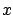
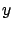

Siguiente: Archivos de entrada-salida para
Subir: Formato de archivos
Anterior: Archivos de entrada-salida de
Índice General
Archivos de entrada-salida para el análisis de error de
predicción
En la sección 7.5.5 se especificó el funcionamiento del
módulo de análisis de error de predicción. El formato de los datos
de las medidas es muy sencillo. Es simplemente un archivo de texto
plano donde en cada línea aparece la coordenada  e  del punto
donde se tomó la medida de potencia, luego debe aparecer la medida
en dB; todo separado por un espacio. Un ejemplo puede
ser:
455.5 6809.3 -45.1
El ejemplo especifica que en la coordenada (455.5, 6809.3) se midió
una potencia de recepción de -45.1 dB. El mismo formato se utiliza
en la grabación a disco de los cálculos realizados con esta
herramienta.
SAPO